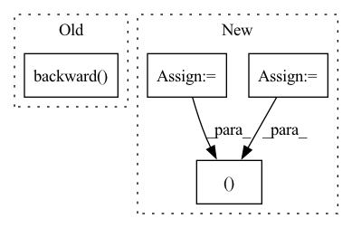

Pattern ID :1353
Before Change
//backward()
if self.optimizer is not None and self.stage=="train":
if self.accelerator is None:
loss.backward()
else:
self.accelerator.backward(loss)
self.optimizer.step()
if self.lr_scheduler is not None:After Change
//all_preds,all_labels = self.accelerator.gather_for_metrics((preds, labels))
all_preds = self.accelerator.gather(preds)
all_labels = self.accelerator.gather(labels)
all_loss = self.accelerator.gather(loss).sum()
//metrics
step_metrics = {self.stage+"_"+name:metric_fn(all_preds, all_labels).item()
for name,metric_fn in self.metrics_dict.items()}
return all_loss.item(),step_metrics
class EpochRunner:
def __init__(self,steprunner):In pattern: SUPERPATTERN
Frequency: 4
Non-data size: 4
Instances Fragment ID: 6501891
Project Name: lyhue1991/torchkeras
Commit Name: b4ca8240901c64ca88e75864f000f5b9d0dcda42
Time: 2022-11-20
Author: liangyun2@tuhu.cn@macbook
File Name: torchkeras/kerasmodel.py
M Class Name: StepRunner
N Class Name: StepRunner
M Method Name: __call__(2)
N Method Name: __call__(2)
M Parent Class:
N Parent Class:
M File Name: torchkeras/kerasmodel.py
N File Name: torchkeras/kerasmodel.py
M Start Line: 41
M End Line: 58
N Start Line: 55
N End Line: 76
Before Change
n_totals += nTotal
// Perform backpropatation
loss.backward()
_ = nn.utils.clip_grad_norm_(self.encoder.parameters(), self.clip)
_ = nn.utils.clip_grad_norm_(self.decoder.parameters(), self.clip)After Change
self.dec_optimizer.zero_grad()
loss = 0
ac_loss = 0
total_loss = 0
print_losses = []
n_totals = 0
input_variable = input_variable.to(self.device)
motion_variable = motion_variable.to(self.device)
input_variable,motion_variable = self.encoder(input_variable,motion_variable)
//print("input variable shape :",input_variable.size())
//print("motion variable shape :",motion_variable.size())
target_variable = target_variable.to(self.device)
mask = mask.byte().to(self.device)
// Forward pass through encoder
decoder_input = torch.LongTensor([[self.cfg.SOS_token for _ in range(self.cfg.batch_size)]])
decoder_input = decoder_input.to(self.device)
decoder_hidden = torch.zeros(self.cfg.n_layers, self.cfg.batch_size,
self.cfg.decoder_hidden_size).to(self.device)
if self.cfg.decoder_type == "lstm":
decoder_hidden = (decoder_hidden,decoder_hidden)
// Forward batch of sequences through decoder one time step at a time
if use_teacher_forcing:
for t in range(max_target_len):
hidden_last = decoder_hidden
decoder_output, decoder_hidden,attn_weight,ct,et = self.decoder(decoder_input, decoder_hidden,
input_variable.float(),motion_variable.float())
// Teacher forcing: next input comes from ground truth(data distribution)
decoder_input = target_variable[t].view(1, -1)
//Run Attended memory decoder and return Pm(wk)
if self.opt_memory_decoder:
mem_out = self.memory_decoder(ct,et,hidden_last,self.memory) //(B,V)
decoder_output = (1-self.cfg.lamb)*decoder_output + self.cfg.lamb*mem_out
// decoder_output : (100,voc.num_words); target_variable[t] : (100); mask[t] : (100)
mask_loss, nTotal = utils.maskNLLLoss(decoder_output.unsqueeze(0), target_variable[t], mask[t],self.device)
loss += mask_loss
print_losses.append(mask_loss.item() * nTotal)
n_totals += nTotal
else:
for t in range(max_target_len):
decoder_output, decoder_hidden,attn_weight,ct,et = self.decoder(decoder_input,
decoder_hidden,input_variable.float(),motion_variable.float())
// No teacher forcing: next input is decoder"s own current output(model distribution)
_, topi = decoder_output.squeeze(0).topk(1)
decoder_input = torch.LongTensor([[topi[i][0] for i in range(self.cfg.batch_size)]])
decoder_input = decoder_input.to(self.device)
if self.opt_memory_decoder:
mem_out = self.memory_decoder(ct,et,hidden_last,self.memory) //(B,V)
decoder_output = (1-self.cfg.lamb)*decoder_output + self.cfg.lamb*mem_out
// Calculate and accumulate loss
mask_loss, nTotal = utils.maskNLLLoss(decoder_output, target_variable[t], mask[t],self.device)
loss += mask_loss
print_losses.append(mask_loss.item() * nTotal)
n_totals += nTotal
ac_loss = self._calculate_AC_loss(attn_weight)
total_loss = self.cfg.acl_weight*ac_loss+loss
// Perform backpropatation
total_loss.backward()
_ = nn.utils.clip_grad_norm_(self.encoder.parameters(), self.clip)
_ = nn.utils.clip_grad_norm_(self.decoder.parameters(), self.clip)
self.enc_optimizer.step()
self.dec_optimizer.step()
return sum(print_losses) / n_totals, ac_loss.item()
def _calculate_AC_loss(self,alphas):
"""
Calculate Attention-Coherent Loss. Fragment ID: 6501874
Project Name: nasib-ullah/video-captioning-models-in-pytorch
Commit Name: a18c50080e6d79be0f52335143f7fbf13462f23c
Time: 2021-06-19
Author: 41543508+nasib-ullah@users.noreply.github.com
File Name: models/MARN/model.py
M Class Name: MARN
N Class Name: MARN
M Method Name: train_iter(8)
N Method Name: train_iter(8)
M Parent Class: nn.Module
N Parent Class: nn.Module
M File Name: models/MARN/model.py
N File Name: models/MARN/model.py
M Start Line: 328
M End Line: 384
N Start Line: 363
N End Line: 437
Before Change
v_loss = F.mse_loss(curr_state_v_value, target_v_value)
v_loss_value = v_loss.detach().cpu().numpy()
self.v_optimizer.zero_grad()
v_loss.backward()
self.v_optimizer.step()
//compute q loss
target_q_value = (reward_batch + (1.0 - done_batch) * self.gamma * next_state_target_v_value).detach()After Change
new_curr_state_q1_value = self.q1_network(state_batch, new_curr_state_action)
new_curr_state_q2_value = self.q2_network(state_batch, new_curr_state_action)
next_state_q1_value = self.target_q1_network(next_state_batch, next_state_action)
next_state_q2_value = self.target_q2_network(next_state_batch, next_state_action)
next_state_min_q = torch.min(next_state_q1_value, next_state_q2_value)
target_q = (next_state_min_q - self.alpha * next_state_log_pi)
target_q = reward_batch + self.gamma * (1. - done_batch) * target_q
new_min_curr_state_q_value = torch.min(new_curr_state_q1_value, new_curr_state_q2_value)
//compute q loss
q1_loss = F.mse_loss(curr_state_q1_value, target_q.detach())
q2_loss = F.mse_loss(curr_state_q2_value, target_q.detach())
q1_loss_value = q1_loss.detach().cpu().numpy()
q2_loss_value = q2_loss.detach().cpu().numpy()
self.q1_optimizer.zero_grad()
q1_loss.backward()
self.q1_optimizer.step()
self.q2_optimizer.zero_grad()
q2_loss.backward()
self.q2_optimizer.step()
//compute policy loss
policy_loss = ((self.alpha * new_curr_state_log_pi) - new_min_curr_state_q_value).mean()
policy_loss_value = policy_loss.detach().cpu().numpy()
self.policy_optimizer.zero_grad()
policy_loss.backward()
self.policy_optimizer.step()
//compute entropy loss
if self.automatic_entropy_tuning:
alpha_loss = -(self.log_alpha * (new_curr_state_log_pi + self.target_entropy).detach()).mean()
alpha_loss_value = alpha_loss.detach().cpu().numpy()
self.alpha_optim.zero_grad()
alpha_loss.backward()
self.alpha_optim.step()
self.alpha = self.log_alpha.exp()
alpha_value = self.alpha.detach().cpu().numpy()
else:
alpha_loss = torch.tensor(0.).to(util.device)
alpha_value = self.alpha.detach().cpu().numpy()
self.tot_update_count += 1
return q1_loss_value, q2_loss_value, policy_loss_value, alpha_loss_value, alpha_value
def try_update_target_network(self):
if self.tot_update_count % self.update_target_network_interval == 0:
util.soft_update_network(self.q1_network, self.target_q1_network, self.target_smoothing_tau) Fragment ID: 6501878
Project Name: x35f/unstable_baselines
Commit Name: 0fc82ae6328814fe2dad0c8e0ae1b172d3e5f981
Time: 2021-03-12
Author: ym8411012@126.com
File Name: sac/models.py
M Class Name: SACAgent
N Class Name: SACAgent
M Method Name: update(2)
N Method Name: update(2)
M Parent Class: BaseAgent,torch.nn.Module
N Parent Class: BaseAgent,torch.nn.Module
M File Name: sac/models.py
N File Name: sac/models.py
M Start Line: 75
M End Line: 129
N Start Line: 83
N End Line: 129